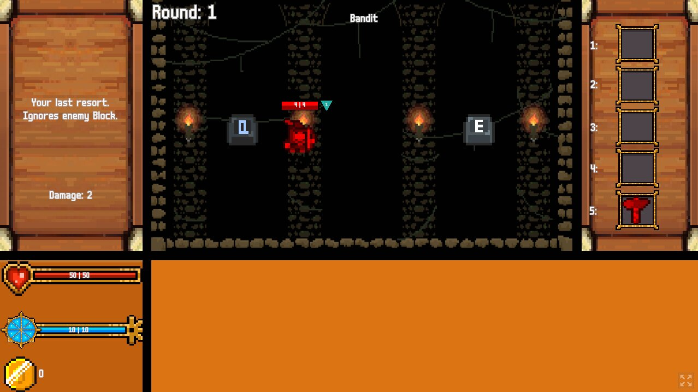

Dungeon Cardler

OVERVIEW & PREMISE
DUNGEON CARDLER is a 2D deckbuilding rogue-like RPG that fuses turn-based weapon combat with dynamic card synergies. Players face escalating waves of fantasy foes, ranging from Bandits and armored Knights to Mages and Bosses like the Slime King.
Unlike traditional deckbuilders where cards act independently, Dungeon Cardler introduces a novel Item-Card Synergy system: cards dynamically check the player's currently equipped weapon and its attack type to execute context-dependent primary or secondary effects. Equipping new weapons permanently unlocks powerful new skill cards across runs, creating a rewarding loop of tactical experimentation and meta-progression.
TECHNICAL HIGHLIGHTS & ARCHITECTURE
-
Modular Architecture & Event-Driven Bus:Strict separation of concerns between game logic managers (GameManager, RoundManager, PlayerManager), visual presenters (UIManager, EnemyBoard, ShopAnimator), and data configurations (ScriptableObjects).Decoupled communication utilizing C# events across player input, stat changes, turn end transitions, and board clear states.
-
Persistent Data System (JSON Serialization):Custom DataPersistenceManager implementing an IDataPersistence interface for decoupled save/load operations.Cross-session storage via FileDataHandler with JSON serialization and optional encryption support for unlocking card pools.
-
Animation & Visual Polish:Smooth UI motion and enemy positioning utilizing DOTween for responsive game feel.Integrated audio management (AudioManager) handling background music, combat feedback, UI audio, and game state transitions.
PROJECT METRICS & TECH STACK
-
Engine: Unity
-
Aesthetics: Retro Pixel Style
-
Libraries used: DOTween by Demigiant
-
Platform: Web / PC (Itch.io Release)
-
Development Cycle: ~3 Months until MVP
-
Role: Solo Developer